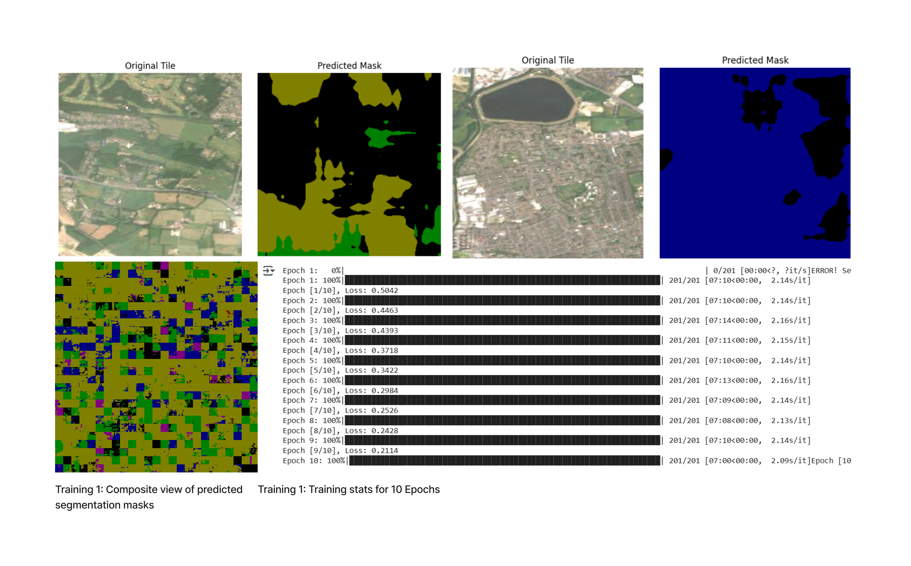
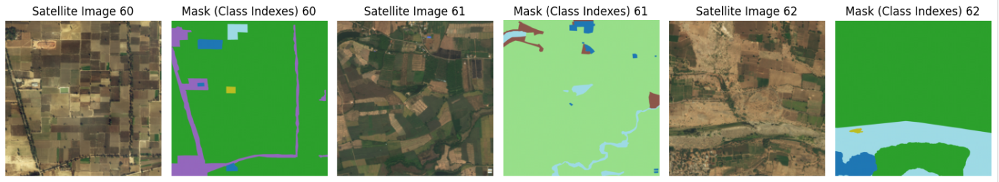
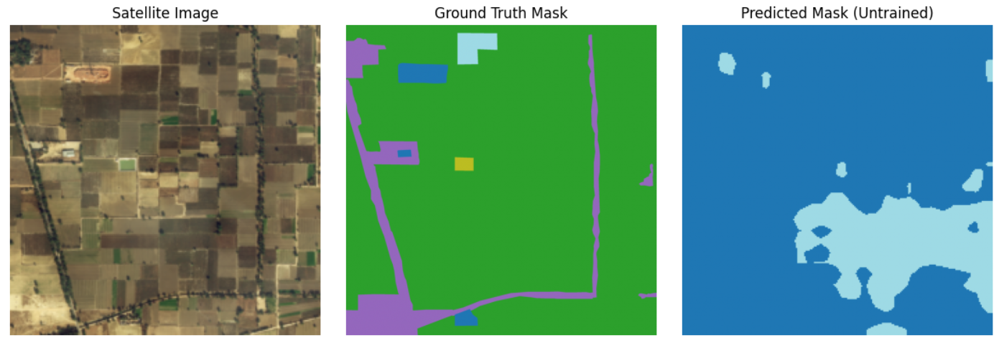
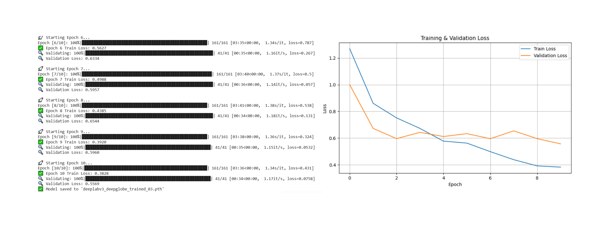
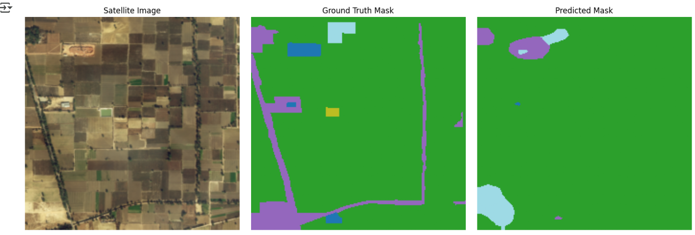

This project aims to explore how machines "see" the world by visualizing machine vision through maps. The main idea is to use a land cover classification model (DeepLabV3) to generate a segmentation map from a satellite image. This prediction map is then fed into a pre-trained image-to-image translation model (Pix2Pix) to reconstruct a satellite-like image from the machine’s interpretation. By comparing the original satellite image with the one generated from the machine’s perspective, the project aims to reveal how machines process and reconstruct visual data. This comparison can create insights about the differences between human and machine perception and raise critical questions about the reliability of machine generated information. Should we trust machine vision to represent reality precisely? And what are the outcomes when machines “imagine” or “hallucinate” details that may not exist?
Firstly, I wanted see whether the model will work without training. I exported a ".tif" image of London from Google Earth Engine. I used the below code to export the image.
// Define a bounding box over London
var london = ee.Geometry.Rectangle([-0.55, 51.28, 0.3, 51.7]);
// Load Sentinel-2 image collection and filter
var s2 = ee.ImageCollection('COPERNICUS/S2_SR')
.filterBounds(london)
.filterDate('2023-06-01', '2023-08-31')
.filter(ee.Filter.lt('CLOUDY_PIXEL_PERCENTAGE', 10))
.median()
.clip(london);
// Center map on London and show image
Map.centerObject(london, 10);
Map.addLayer(s2, {bands: ['B4', 'B3', 'B2'], min: 0, max: 3000}, 'RGB');
// Export as image
Export.image.toDrive({
image: s2.visualize({bands: ['B4', 'B3', 'B2'], min: 0, max: 3000}),
description: 'London_Satellite_Image',
scale: 10,
region: london,
fileFormat: 'GeoTIFF'
});
I imported the downloaded file into Google Colab, and split it into tiles. I loaded the pretrained DeepLabV3 model into Google Colab, transformed the images to be interpretable by the model and then fed them into the model. The output of the prediction. masks were all black with occasional cases of color popping up randomly. I learned that this was because the model has never seen satelite images before, and it cannot interpret objects like rooftops, roads, parks, water. Therefore I needed to train the model to recognize these images.

To train the model, I used Deep Globe Land Cover Dataset. I imported this dataset directly into Google Colab, using the below code block.
from google.colab import files
files.upload() # Upload kaggle.json here
!mkdir -p ~/.kaggle
!cp kaggle.json ~/.kaggle/
!chmod 600 ~/.kaggle/kaggle.json
# Download the dataset
!kaggle datasets download -d balraj98/deepglobe-land-cover-classification-dataset
# Unzip
!unzip deepglobe-land-cover-classification-dataset.zip -d deepglobe
The file structure of the dataset included both segmentation masks and the satelite images as pairs in the training folder. After confirming the file structure, I created a Dataset Class and then applied transforms to be readble by the model. ChatGPT insisted that I should feed the masks as grayscale image becuse thats how segmentation masks work where each greyscale pixel represents a class. Although it did,2nt make sense, I tranformed the images into greyscale using
mask = Image.open(mask_path).convert("L") mask = Image.open(mask_path).convert("L")
Then I created a data loader. I learned that DeepLabV3 is normally trained to predict 21 different classes, however DeepGlobe dataset only involved 6. As a result, I ended up modyfying the model as below
model.classifier[4] = torch.nn.Conv2d(256, 6, kernel_size=1)
Once I attempted to train the model, the GPU usage limit of Google Colab ran out, so I ended up using local GPU.
I switched to local GPU by running coding3 environment in my local laptop. I used the local host link to connect to Google Colab. After this, I had to make some tweaks in the code, since I was uploading DeepGlobe dataset without any downloads. I repeated the other steps above, and I finally was able to train the model. The first results were not satisfactory althought the learning rate seemed to be good. The model produced masks that are almost randomly colored, in an unrelated way to the information on the original satelite image.
To solfve this problem, I decided to retrain the model making some changes in the code. I changed the optimizer from Adam to AdamW, increased the number of epochs from 10 to 20, rearranged the image transformations to be more adaptable for the model. Furthermore, I changed to model architecture to use DeepLabV3+ResNet50. I used the L2 regularization method to prevent overfitting by implementing "weight_decay=1e-5" to the optimizer steps.
optimizer = torch.optim.AdamW(model.parameters(), lr=1e-4, weight_decay=1e-5)
This time, the loss value started very high and did not go below 0.1. The resulting prediction masks were noticeably worse, consisting of only two colors over the whole satellite image. Similarly with the previous training, the textures that were generated in the predicition masks were unrelated to the information on the original satelite images.

import os
from PIL import Image
import numpy as np
import torch
from torch.utils.data import Dataset
from glob import glob
import pandas as pd
def load_class_map(csv_path):
df = pd.read_csv(csv_path)
class_colors = {}
for _, row in df.iterrows():
rgb = (row['r'], row['g'], row['b'])
class_idx = row['class']
class_colors[rgb] = class_idx
return class_colors
class DeepGlobeDataset(Dataset):
def __init__(self, root_dir, class_dict_path, transforms=None):
self.root_dir = root_dir
self.transforms = transforms
self.class_colors = self._load_class_colors(class_dict_path)
self.image_paths = sorted(glob(os.path.join(root_dir, '*_sat.jpg')))
self.mask_paths = sorted(glob(os.path.join(root_dir, '*_mask.png')))
# Make sure they match by filename ID
self.image_paths = [img for img in self.image_paths if self._find_mask(img)]
self.mask_paths = [self._find_mask(img) for img in self.image_paths]
def _load_class_colors(self, csv_path):
df = pd.read_csv(csv_path)
print("Columns in class_dict.csv:", df.columns.tolist()) # Print column names
color_to_class_index = {}
for index, row in df.iterrows():
color = (row['r'], row['g'], row['b'])
# Map RGB color to an integer index based on row number
class_index = index
color_to_class_index[color] = class_index
return color_to_class_index
def _find_mask(self, image_path):
base_id = os.path.basename(image_path).split('_')[0]
mask_path = os.path.join(self.root_dir, f'{base_id}_mask.png')
return mask_path if os.path.exists(mask_path) else None
def _rgb_to_class(self, mask):
mask = np.array(mask)
h, w, _ = mask.shape
label_mask = np.zeros((h, w), dtype=np.uint8)
for rgb, class_idx in self.class_colors.items():
matches = np.all(mask == rgb, axis=-1)
label_mask[matches] = class_idx
return label_mask
def __len__(self):
return len(self.image_paths)
def __getitem__(self, idx):
image = Image.open(self.image_paths[idx]).convert('RGB')
mask = Image.open(self.mask_paths[idx]).convert('RGB')
mask = self._rgb_to_class(mask)
if self.transforms:
image = self.transforms(image)
mask = torch.from_numpy(mask).long()
return image, mask
To be sure that the mask-image pairs are correctly assigned before being fed into the model, I dispalyed three consecutive pairs.
To compare the results after training, I made the untrained model predict a mask from one of the satelite images in the dataset.
I repeated the processes of formatting the dataset, initializing the DeepLabV3 model with ResNet50, adding a Conv2D layer, setting up the Adam optimizer and CrossEntropyLoss function, defining the batch size and number of epochs, and transferring the model to the GPU. After making sure that the dataset and the model is prepared without any errors, I pushed them into training. This time I calculated both training and validation losses.
After training is done, I saved the model and loaded it to use on my dataset. Before passing my dataset into the model, I wanted to ensure that the training was accurate. I repeated the step of displaying the original satellite image, the ground truth mask, and the predicted mask side by side, this time using the trained model.
Later, I imported the London Satelite image I dowloaded from Google Earth Engine, and split it into tiles, like I did in the previous steps. I made sure that the tile sizes and zoom level matched the training data. I fed the London Satelite Image tiles into the trained model. Finally I displayed the composite view of tiles, on top of the original satelite image, with labels that indicate the classes. The produced segmentation masks were more accurate than the previous trainings. The model, was almost correcctly able to distinguish between agricultural zones, urban areas, water elements and etc. Since my idea wa to show how machines make mistakes, I did not want to retrain the model for a more precise outcome. I was ready to move on to the next phase

My aim was to feed the produced tiles into a pretrained Pix2pix model, to reproduce a satelite image. Although I attempted to clone the repository to reuse it, I ran into several issue. Due to lack of time, I decided to work on this phase in the future.
This project thought me how to prepare datasets and carefully select the models, to achieve the desired outcome. I think DeepLabV3 is not ideal for my project. It was originally designed for detecting and classifying objects in images from a human-eye perspective images, where objects appear in large scales and are more distingusihable. In contrast, in satellite images, the point of view is from above, and the objects are scattered in small scales, lacking clear boundries. This inconsistency highlights the importance of aligning the model choice with the characteristics of dataset. The processes I have went through during the project, act as a reminder of not to rely solely on machines, for accurate interpretation and representation of information. While machine intelligence is faster and more powerful than human cognition in many tasks, it lacks the flexibility required to adapt its reasoning methods among different types of datasets. A specific model, is trained for a narrow purpose and has trouble to generalize outside of that scope. I believe that the adaptability and the contextual awareness of the human mind have not yet been replaced and that gives us a reassurance that our jobs are still safe.